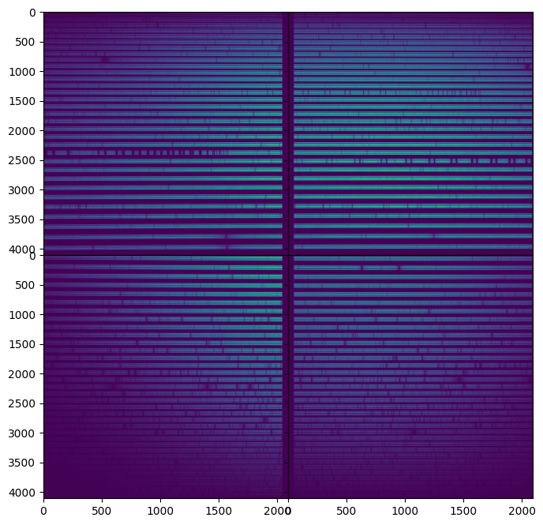

How to download HARPS-N Solar data from the Keck Observatory Archive
This tutorial
was originally developed for the Sun-as-a-Star Splinter at the Extremely
Precise Radial Velocities Sixth Workshop (EPRV6) in June 2024.
Main contrutors: Ryan Rubenzhal and Khaled Al Moulla.
This tutorial uses the KOA Python API. Keck also provides official
tutorials
and more examples for accessing all types of calibration data.
PyKOA
requires Python 3.6 or above and astropy. To install the package use:
pip install --upgrade pykoa
Import packages and set up output directory
import io
import os
import sys
import glob
import numpy as np
import matplotlib as mpl
import matplotlib.pyplot as plt
from pykoa.koa import Koa
from astropy.io import fits
from astropy.time import Time
from astropy.table import Table, Column
outdir = 'sun_kpf_l2/'
os.makedirs(outdir, exist_ok=True)
More details about KOA can be found with
help(Koa)
Submit the query by date or datetime range. This will return all KPF files during the time range.
PyKOA supports several output table formats, which are selected with the 'format' field. These formats are:
IPAC (column delimited ASCII; default), VOTable, CSV, and TSV. All the examples below deliver output in
IPAC format.
# Query a specific UTC date/time range
Koa.query_datetime(instrument='kpf',
datetime='2024-06-03 18:30:00/2024-06-03 22:30:00', # UTC
outpath=f'{outdir}/datetime.kpf.tbl',
format='ipac')
# or query the full UTC date
# Koa.query_date(instrument='kpf',
# date='2024-06-03',
# outpath=f'{outdir}/datetime.kpf.tbl',
# format='ipac')
rec = Table.read (f'{outdir}/datetime.kpf.tbl',format='ipac')
Or we can query by data type (solar).
param = dict()
param['instrument'] = 'kpf'
param['target'] = 'Sun'
param['date'] ='2024-06-03' # can specify a date as well
# or date range
# param['datetime'] = '2024-06-01 00:00:00/2024-06-30 23:59:59'
Koa.query_criteria(param,
f'{outdir}/solar.kpf.tbl',
format='ipac')
rec = Table.read(f'{outdir}/solar.kpf.tbl', format='ascii.ipac')
Download the data and load the files. All the downloaded data with file types and
extensions can be found at this
link. This
download includes the level 0, 1 and 2 data.
Koa.download(f'{outdir}/solar.kpf.tbl',
format='ipac',
outdir=f'{outdir}/data',
# calibfile=1, # whether to also look for associated calibration files
lev1file=1, # whether to also download L1 spectra
start_row=152,end_row=153 # can specify range in the table
)
glob.glob(f'{outdir}/data/lev0/*fits')
# Files
files = glob.glob(f'{outdir}/data/lev0/*fits')
Nfile = len(files)
hdu = fits.open(files[0])
For this tutorial, let us plot the level 0 data
fig, axes = plt.subplots(2,2, figsize=(8,8), sharex=True, sharey=True,
gridspec_kw={'hspace':0, 'wspace':0})
axes[0,0].imshow(hdu['RED_AMP1'].data , origin='lower', aspect='auto')
axes[0,1].imshow(hdu['RED_AMP2'].data , origin='lower', aspect='auto')
axes[1,0].imshow(hdu['GREEN_AMP1'].data, origin='upper', aspect='auto')
axes[1,1].imshow(hdu['GREEN_AMP2'].data, origin='upper', aspect='auto')
